-
Web Development
-
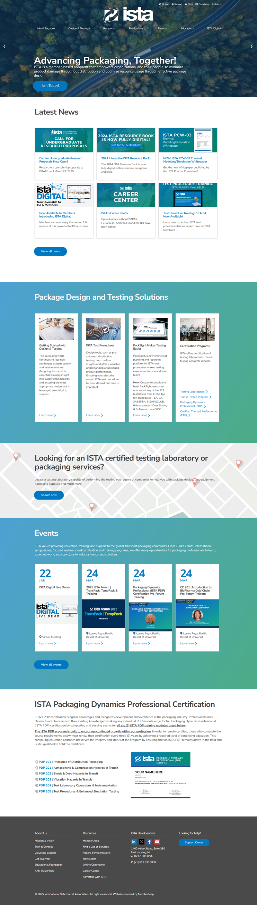
The International Safe Transit Association was looking to to elevate their web presence to reflect their status as a leading trade organization for shipped packaging. The resulting website is as informative as it is a delight to look at.
View ISTA website -
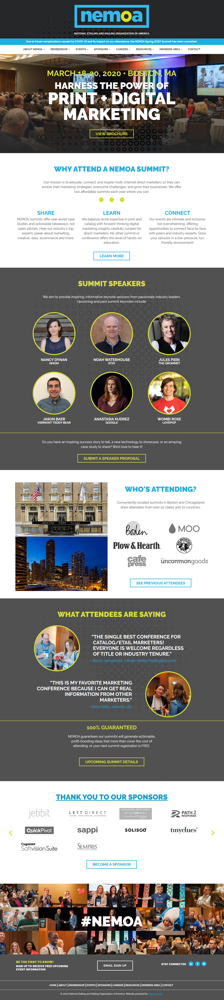
NEMOA's member companies are catalogers, retailers, e-marketers, and suppliers. With this iteration of their website, they aimed to draw attention to their annual summit.
View NEMOA website -
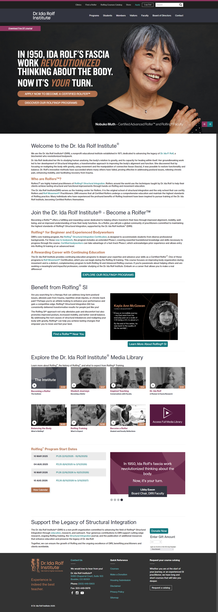
The Dr. Ida Rolf Institute is a nonprofit educational institution that teaches practitioners bodywork through structural integration. Their website showcases a diverse set of features for its visitors that are tied together with a peaceful aesthetic.
View Dr. Ida Rolf website -
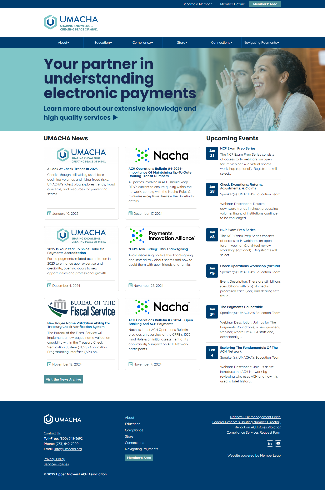
Partnering with financial institutions to clarify the complexities of electronic payments, UMACHA needed a website that converted their expertise through a calm and reassuring design.
View UMACHA website -
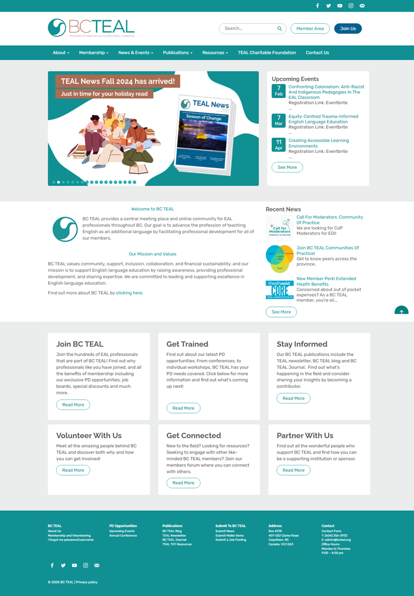
Supporting English as an Additional Language teachers in British Columbia, a top priority of the BCTEAL website was showcasing the organization's events and support of it's members.
View BCTEAL website -
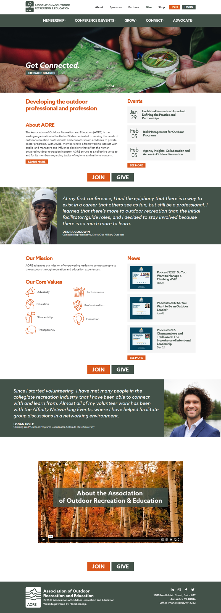
The Association of Outdoor Recreation and Education (AORE) is the leading organization in the United States dedicated to serving the needs of outdoor recreation professionals and educators from academia to private sector programs.
View AORE website -
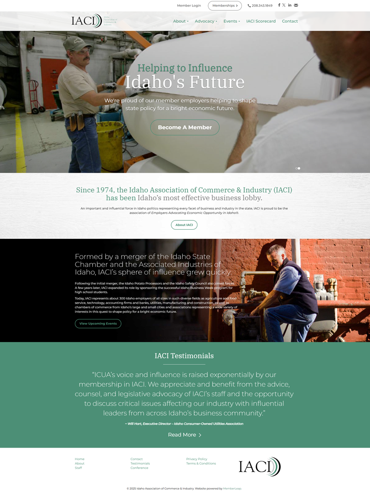
IACI needed a website that positioned them as the premier representational organization for potato processors in Idaho, and to work to develop, implement and retain policies and initiatives that will create the most attractive climate in the nation for potato processors to start, operate and grow.
View IACI website -
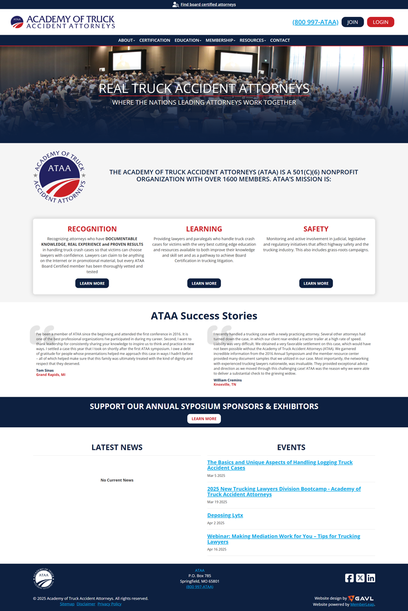
The Academy of Truck Accident Attorneys seeks to separate the great lawyers from the great marketers. They needed a website that was professional and feature packed without alienating a user base that can be easily overwhelmed by technology.
View ATAA website -
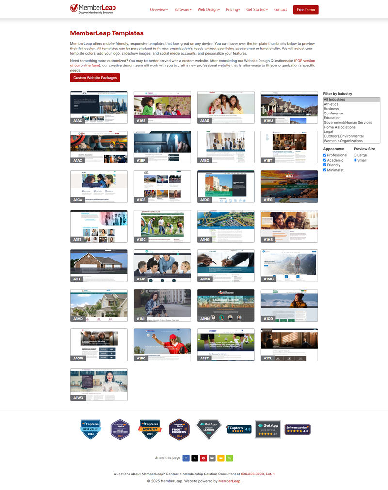
The MemberLeap software is packed full of features, allowing organizations to manage memberships, handle event registration, facilitate online learning and more. Their website needed to convey lots of information to potential customers without feeling overwhelming.
View Memberleap website - View graphic design examples
-
Graphic Design
-
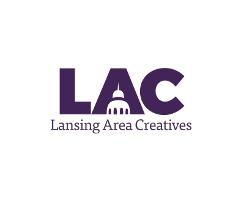
A social club for creative professionals in the greater Lansing area, Lansing Area Creatives was a passion project to which I contributed to it's logo, branding and more.
-
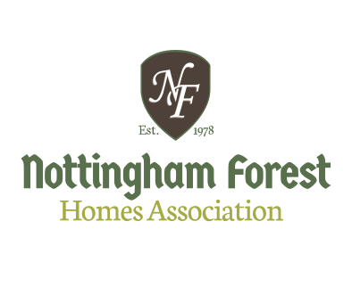
Nottingham Forest is one of the premier luxury home developments of Prairie Village, Kansas. Situated among mature trees and lush landscaping alongside the Overland Park Golf Course, this community has thrived since it's establishment in 1978.
-
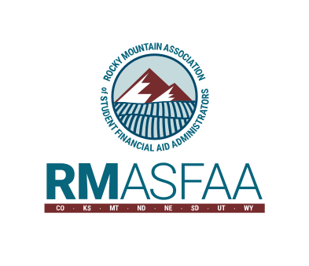
RMASFAA is a regional organization that provides professional development, networking, and support for financial aid professionals working in higher education.
-
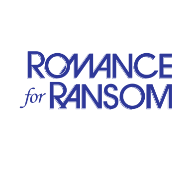
Romance for Ransom has been a mainstay for female-driven emo and pop-punk in Grand Rapids and the greater Western Michigan rock scene since 2010.
-
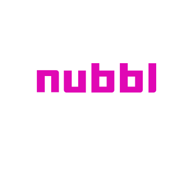
Formed as a space for gaming enthusiasts to discover one another, make new games, or just play some games together and chill. Nubbl has connected over 11,000 gamers.
-
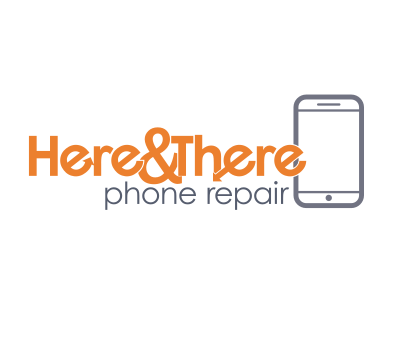
Here and There Phone Repair aims to make phone repair more convenient by traveling to its customers for phone, tablet and smart watch repairs.
-
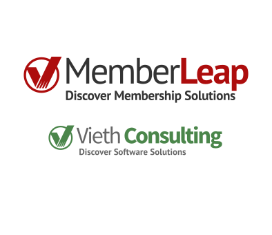
MemberLeap, the membership management software service from Vieth Consulting LLC. allows organizations to register for events, facilitate online learning and hold elections and more.
-
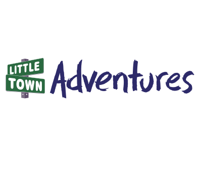
Little Town Adventures playmats allow children a chance to play with toy cars on top of cityscapes based on locations around Michigan.
-
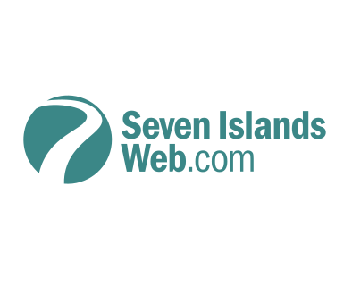
Seven Islands Web offers affordable websites and hosting for businesses of the Grand Ledge Michigan area.
- View web development examples